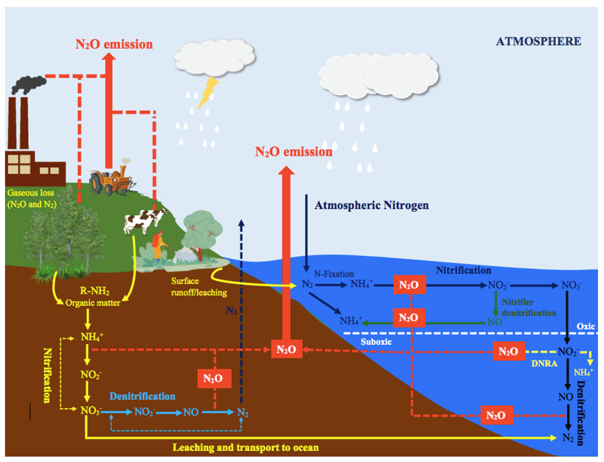

12 Terrestrial greenhouse gas emissions
Authored by Ting Tan and Shiyuan Feng. Edited by Benjamin Stocker.
12.1 Most important greenhouse gases with terrestrial sources
Greenhouse gases with important sources in terrestrial ecosystems are among the most potent radiative forcing agents (Figure 9.4). Among them, methane (CH4) has the highest effective radiative forcing (ERF) since 1700 with 0.54 [0.43-0.65] W m-2 - comparable in magnitude to the ERF of halogens and ozone. Nitrous oxide (N2O) also has a sizable contribution to anthropogenic climate change with an ERF of 0.21 [0.18-0.24] W m-2, amounting to roughly 10% of the ERF of CO2, which is 2.16 [1.90-2.41] W m-2. Note however that both CH4 and N2O are emitted from a large number of natural and anthropogenic sources and it is not straight-forward to separate them because of the use and transformation of natural ecosystems for human activities.
12.2 Terrestrial methane (CH4) sources
Methane emissions result from multiple sources, linked to both natural processes and human activities. The largest natural sources of methane include wetlands, freshwater systems, and geological processes. As depicted in Figure 12.1, wetlands contribute 102-182 Tg CH4 yr-1, mainly through microbial activity in anaerobic conditions, such as those found in flooded, low-oxygen soils. Freshwater systems, particularly those with sediments rich in organic matter, emit 117-212 Tg CH4 yr-1 via ebullition (“bubbling”) and diffusion through the water column. Terrestrial geological processes emit 18–65 Tg CH4 annually from the Earth’s crust through faults and fractured rocks and seeps. The ocean contributes a smaller share, with only 4–10 Tg CH4 yr-1, through biogenic, geological and hydrate emissions from coastal and open ocean, while termites, an insect infraorder, release around 9 Tg CH4 yr-1.
Anthropogenic sources of methane primarily arise from fossil fuel extraction and processing, livestock, waste management, and rice cultivation. Fossil fuel extraction is estimated to contribute 114–116 Tg CH4 yr-1, with significant emissions coming from countries such as China, the United States, and Russia, which are the leading producers of coal, oil, and gas, globally. Livestock, particularly ruminants, are the largest source linked to agricultural activities, emitting 106–115 Tg CH4 yr-1 through enteric fermentation and manure management in anaerobic conditions. Similarly, anaerobic decomposition occurs in landfills and during organic waste treatment, as well as in flooded rice paddies (25-37 Tg CH4 yr-1). Additionally, methane is released during incomplete combustion of organic material in biomass burning. Biomass burning contributes 22-39 Tg CH4 yr-1, with emissions coming from burning crop residues, savannah fires, forest fires, and stoves. However, distinguishing between natural and human-caused fires is complicated by a variety of factors, including weather conditions, vegetation types and land management practices, which are driven by the interplay of natural and human activities.
12.3 Terrestrial ntrous oxide (N2O) sources
Natural sources of nitrous oxide (N2O) include soils under natural vegetation and oxygen-deprived zones of the open ocean, with smaller contributions from inland water bodies and atmospheric chemistry (Figure 12.2). Soils under natural vegetation are the largest natural source, contributing 4.9-6.5 TgN yr-1 through microbial nitrification and denitrification, as shown in Figure 12.3. A further -0.6-1.1 TgN yr-1 could be added to soils in natural ecosystems influenced by human perturbation of nitrogen deposition from land-based agriculture and fossil fuel combustion. The open ocean emits 2.5-4.3 TgN yr-1, largely through nitrification in oxygen-rich waters and denitrification in oxygen minimum zones.

Of the anthropogenic N2O emissions, agriculture is the most important source, contributing 2.5–5.8 TgN yr-1 due to the extensive use of synthetic fertilizers and manure on croplands and pastures, as well as from manure management and aquaculture. Fertilizers and manure enrich the soil nutrition for plants but also increase N2O emissions from soil inorganic nitrogen that is not absorbed by plants. Non-agricultural sectors also contribute to anthropogenic N2O emissions, particularly from industrial activities such as fossil fuel combustion and chemical processing (0.8-1.1 TgN yr-1), and wastewater treatment (0.2-0.5 TgN yr-1). Industrial N2O emissions, primarily from nitric and adipic acid production, have decreased in North America and Europe since the 1990s due to the adoption of abatement technologies. Additionally, inland water bodies, estuaries, and nitrogen deposition from atmospheric pollution contribute relatively small amounts of N2O. Biomass burning, including natural and anthropogenic fires, also contributes 0.5-0.8 TgN per year.

12.4 History of atmospheric concentrations of CH4 and N2O
During glacial periods, atmospheric CH4 concentrations typically ranged around 320 ppb and were thus substantially lower than during warm (interglacial) periods, when concentrations were around 700 ppb (Figure 12.4). The transitions between glacial and interglacial periods were typically characterised by a sharp increase in CH4 concentrations, reflecting changes in natural sources, such as wetlands and permafrost. Similarly, N2O concentrations varied between about 195 ppb during glacial periods and up to 290 ppb during interglacial periods. These variations in atmospheric N2O concentrations were related to varying sources from soils and marine emission changes in response to changes in ocean currents and oxygen availability (Joos and Spahni 2008).

The last glacial maximum occurred around 20,000 years ago. Since then, both CH4 and N2O concentrations have increased first to typical interglacial levels during the pre-industrial Holocene (between around 11 kyr BP to 1700 CE), and then in a rapidly accelerated fashion to current levels of around 1800 ppb CH4 and around 330 ppb N2O. The growth rates during the industrial period are about 500 times faster than ever recorded during glacial-interglacial cycles. This reflects the significant contribution of anthropogenic activities since the Industrial Revolution. However, rapid changes in atmospheric concentrations occurred also during glacial periods, when CH4 and N2O varied rapidly over the course of (mainly northern-hemispheric) climate oscillations (Figure 1.3) associated with variations in the meridional overturning circulation (Arneth et al. 2010).
Although atmospheric concentrations of CH4 and N2O are two to three orders of magnitude (factor 100-1000) lower than concentrations of CO2, their contribution to anthropogenic climate change, measured by their effective radiative forcing, is disproportionately larger due to the high global warming potential of these greenhouse gases (Section 12.6).
In summary, both CH4 and N2O concentrations varied strongly over the ice-age-interglacial cycles and have rapidly risen since industrialisation to concentrations far beyond levels ever recorded during the last 800,000 years.
12.5 Atmospheric sinks of CH4 and N2O
As illustrated in Figure 12.1, methane is primarily removed from the atmosphere through chemical loss in the troposphere via oxidation by hydroxyl radicals (OH-) at 483-682 Tg CH4 yr-1. Other minor sinks for methane include soil uptake through bacterial oxidation, loss in the stratosphere via reactions with chlorine (Cl) and excited oxygen atoms (O(¹D)), and loss through tropospheric chlorine reactions. Therefore, the concentration of OH, particularly in the troposphere, is a dominant determinant of the rate of CH4 removal.
By contrast, as illustrated in Figure 12.2, nitrous oxide is removed in the stratosphere through two principal processes: photolysis, whereby N2O molecules are broken down by ultraviolet (UV) radiation, and oxidation by O(¹D) radicals, where reactive oxygen atoms oxidize N2O. Stratospheric factors, such as temperature and UV radiation levels, play a major role in N2O destruction. Warming could potentially accelerate stratospheric circulation, affecting the distribution and degradation of N2O. Furthermore, changes in stratospheric ozone concentrations can influence the rate at which N2O is broken down. In addition, the slight negative feedback of N2O lifetime to rising N2O levels results in a marginally shorter residence time.
Common to sink processes for both CH4 and N2O is that, to first order, the sink rates are proportional to the respective atmospheric concentration. The atmospheric concentration of, for example N2O, proportionally scales the number of N2O molecules exposed to oxidation. Secondary effects modify this rate, but conceiving the sink flux (descruction rate) to be proportional to concentration yields a good approximation.
12.6 Atmospheric lifetime of CH4 and N2O
In view of the atmospheric sink processes for CH4 and N2O (Section 12.5) and the proportionality between the sink flux and concentrations, the atmospheric mass balance of CH4 and N2O can be described as \[ \frac{\mathrm{d}C(t)}{\mathrm{d}t} = E(t) - \frac{1}{\tau} C(t) \;. \tag{12.1}\]
\(C(t)\) is the atmospheric mass or either CH4 or N2O at time \(t\), and \(E(t)\) are the respective emissions. The proportionality constant \(\tau\) represents the atmospheric lifetime or turnover time (in years) of the greenhouse gas. See Section 3.2 for a more detailed introduction of the concept of the turnover time and the 1st-order decay model.
Methane (CH4) is a relatively short-lived GHG with an atmospheric lifetime (\(\tau\)) of about 11.8 ± 1.8 years (Table 12.1), while nitrous oxide (N2O) is considered a long-lived GHG, persisting in the atmosphere for around 109 ± 10 years (Forster et al. 2021). This means that methane has a shorter atmospheric residence time compared to long-lived GHGs, allowing it to reach a steady state more quickly due to its higher rate of removal. In contrast, N2O may accumulate in the atmosphere over longer time scales, remaining for more than a century before it is removed. This has implications for the effectiveness of emission abatement strategies. Methane is both short-lived and contributes to anthropogenic climate change with a high radiative forcing Figure 9.4. Achieving rapid methane emission reductions is therefore a candidate for effective and rapid climate mitigation.
Global warming potential
To compare the warming effects of emissions from different greenhouse gases, effects are often measured relative to effects of carbon dioxide (CO2), in terms of kilograms of CO2 equivalent. This produces a dimensionless factor known as the Global Warming Potential (GWP). The GWP metric quantifies the cumulative warming effect (or radiative forcing) of the emission of 1 kilogram of a greenhouse gas compared to the emission of 1 kilogram of CO2 and considers its removal from the atmosphere over a specified time horizon, commonly 20 years (GWP20), 100 years (GWP100), or 500 years (GWP500). Thus, the GWP considers both the radiative efficiency of the GHG and its atmospheric lifetime.
It is important to note also that the GWP of the short-lived GHG CH4 is much at the 20-year time scale, than at longer time scales. This owed to the rapid decay of atmospheric CH4, while CO2 remains airborne for longer (while a small fraction remains in the atmosphere for millennia). In contrast to CH4, N2O has a similar GWP at the 20 and the 100 year time scale because its atmospheric concentration decline unfolds at a similar rate than that of CO2 over the first 100 years.
| Species | Lifetime (Years) | Radiative Efficiency (W m⁻² ppb⁻¹) | GWP-20 | GWP-100 | GWP-500 |
|---|---|---|---|---|---|
| CO2 | Multiple | 1.33 ± 0.16 ×10⁻⁵ | 1.0 | 1.0 | 1.0 |
| CH4-fossil | 11.8 ± 1.8 | 5.7 ± 1.4 ×10⁻⁴ | 82.5 ± 25.8 | 29.8 ± 11 | 10.0 ± 3.8 |
| CH4-non fossil | 11.8 ± 1.8 | 5.7 ± 1.4 ×10⁻⁴ | 79.7 ± 25.8 | 27.0 ± 11 | 7.2 ± 3.8 |
| N2O | 109 ± 10 | 2.8 ± 1.1 ×10⁻³ | 273 ± 118 | 273 ± 130 | 130 ± 64 |
| HFC-32 | 5.4 ± 1.1 | 1.1 ± 0.2 ×10⁻¹ | 2693 ± 842 | 771 ± 292 | 220 ± 87 |
| HFC-134a | 14.0 ± 2.8 | 1.67 ± 0.32 ×10⁻¹ | 4144 ± 1160 | 1526 ± 577 | 436 ± 173 |
| CFC-11 | 52.0 ± 10.4 | 2.91 ± 0.65 ×10⁻¹ | 8321 ± 2419 | 6226 ± 2297 | 2093 ± 865 |
| PFC-14 | 50,000 | 9.89 ± 0.19 ×10⁻² | 5301 ± 1395 | 7380 ± 2430 | 10,587 ± 3692 |
12.7 The evolution terrestrial CH4 and N2O in future scenarios
Rising atmospheric CO2 concentrations, climate change, increasing reactive nitrogen inputs (atmospheric deposition and N fertiliser applications on croplands) all contribute to changes in terrestrial emissions CH4 and N2O in future scenarios. The CO2 fertilization may lead to an acceleration of carbon and nutrient cycling, including the decomposition of soil litter and organic matter due to increased plant productivity in terrestrial ecosystems. As a consequence of the accelerated element cycling under rising CO2, some models suggest that N2O and CH4 production will increase in a high-emission scenario, but will stabilise in a low-emission scenario (Stocker et al. 2013). Additionally, reactive N inputs from fertilizers application and atmospheric deposition increase substrate availability for denitrification, leading to higher N2O emissions. However, climate change and rising CO2 also alter soil moisture and oxygen availability which is a control on both N2O and CH4 emissions from soils. Plant productivity enhancements under rising CO2 and climate change tend to deplete inorganic soil N pools and may thus reduce denitrification rates and N2O production. Therefore, the net effect of multiple changing factors is simulated differently by different models (Zaehle et al. 2011; Stocker et al. 2013).
Reactive N inputs through atmospheric deposition and fertiliser application are prone to being lost as N2O. The fraction of N lost as N2O to total N inputs is commonly quantified as an emission factor. Modelling results suggest that the global average emission factor for N2O increases in a climate change scenario, and that the rise in N2O emissions in a rapid warming scenario could be strongly reduced by limiting reactive N production and inputs to terrestrial systems (Stocker et al. 2013).
Methane and nitrous oxide are potent greenhouse gases that amplify anthropogenic climate change. This means that while the terrestrial biosphere acts as a carbon sink, leading to an attenuation of warming in climate change scenarios, it also contributes to increased CH4 and N2O emissions with an amplifying impact. These positive feedbacks partially offset the cooling effect of carbon uptake by land.
12.8 Emission-concentration relationships differ between CO2 and CH4 (and N2O)
The emission-concentration relationships for CO2, CH4, and N2O differ significantly due to their different sources, atmospheric lifetimes, and the mechanisms by which atmospheric concentrations are reduced. CO2 has multiple lifetimes as it cycles between different pools. Once emitted, atmospheric CO2 is not actually removed (no chemical destruction), but is gradually redistributed among the different spheres in the Earth system - a process that takes hundreds to thousands of years. Critically, a portion of CO2 remains in the atmosphere at millennial time scales, leading to a continues buildup in atmospheric concentration over time unless emissions are reduced to zero. In contrast, CH4 has a shorter atmospheric lifetime of decades and is removed by chemical reactions in atmosphere. After a cessation of emissions, atmospheric CH4 concentrations decline exponentially towards zero. Analogously, when CH4 emissions are stabilised, concentrations are stabilised as well, while CO2 concentrations continue rising under positive non-zero emissions. The same dynamics as for CH4 apply to N2O, albeit (considering its longer atmospheric lifetime) with slower dynamics and response time scales of concentration changes in response to emission changes.